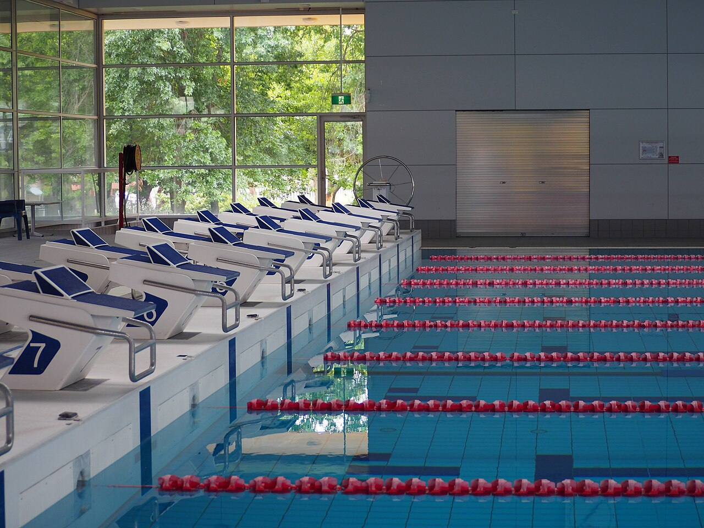

| Nadador | Grupo | Tiempo |
|---|---|---|
| L. Martín | Absoluto | 58,42 Récord |
| C. Ruiz | Junior | 1:02,15 |
| A. Gómez | Infantil | 1:09,80 Récord |
| M. Torres | Infantil | 1:11,04 |
Datos de ejemplo
Swimming Up
Proyecto final DAW · 2026
Gestión integral de un club de natación: nadadores, grupos, competiciones, calendario y marcas. Panel de administración con roles, API JSON y blog del club, orquestado con Docker Compose y Nginx.
Ver repositorio